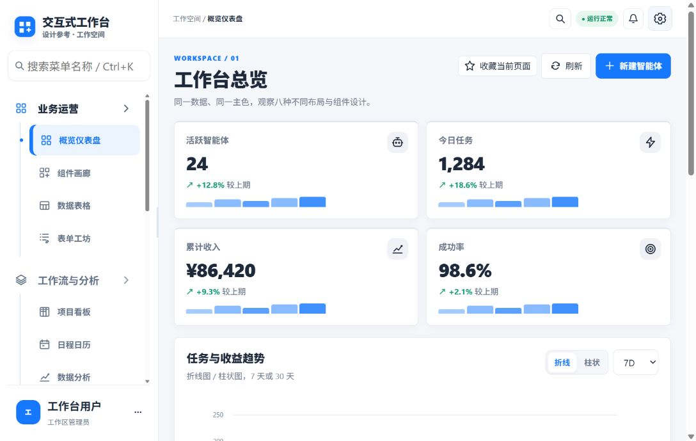
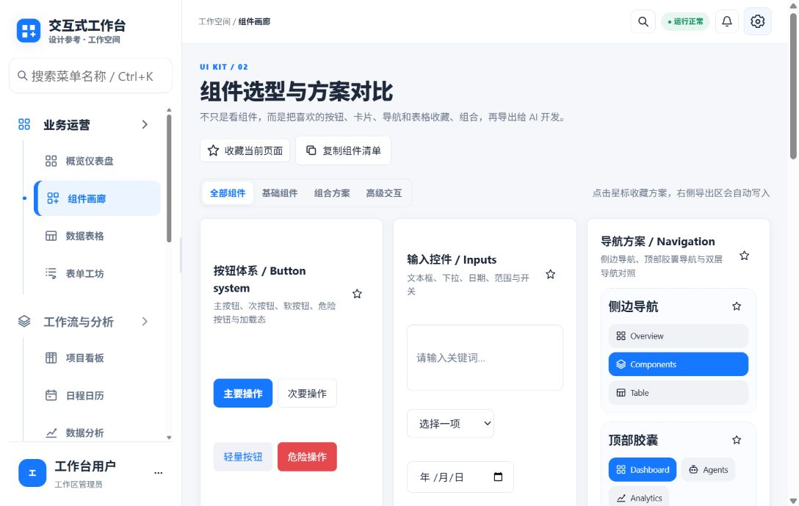
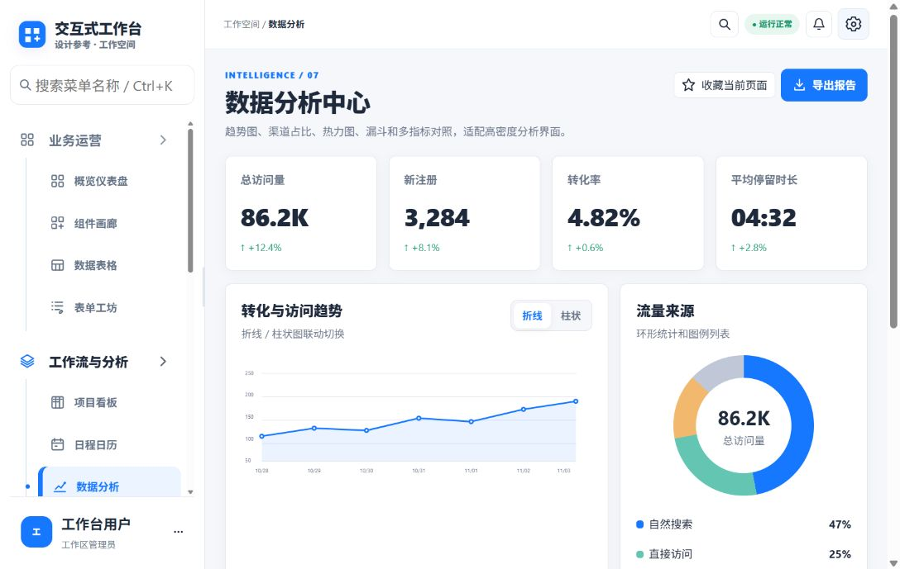
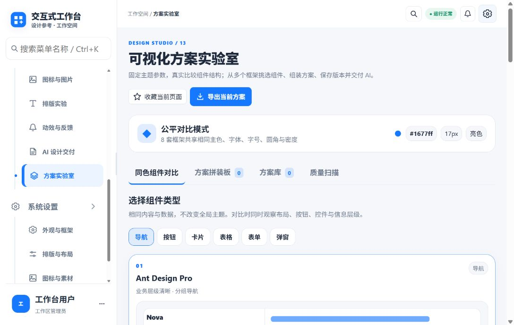
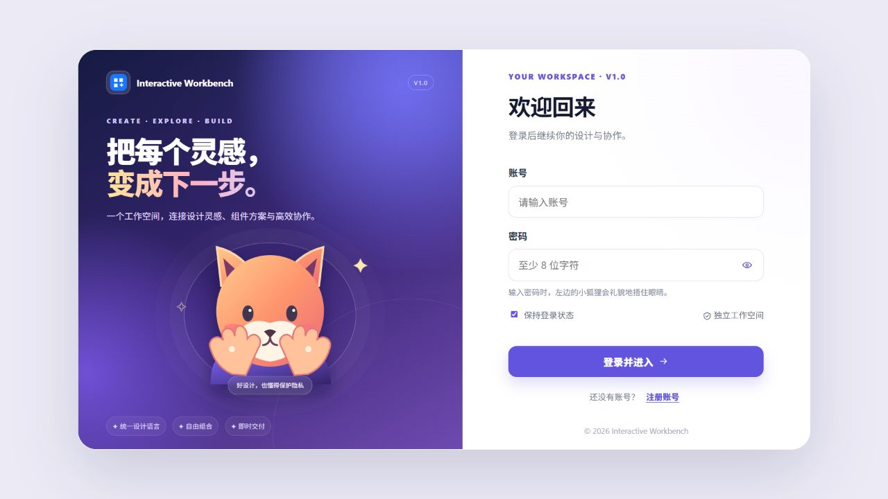

17 个完整工作视图
概览仪表盘、组件画廊、数据表格、表单、看板、日历、分析、AI 智能体、排版、反馈与交付设置。
Interactive Workbench 是一个可操作的界面设计工作台。用统一的内容和主题浏览不同框架、主题色与信息布局，再收藏组件、拼装方案，把清晰的设计决定交给 AI 与研发继续实现。

把设计讨论中经常散落在截图、聊天和口头意见里的内容，放回到同一个可以操作的工作台里。
概览仪表盘、组件画廊、数据表格、表单、看板、日历、分析、AI 智能体、排版、反馈与交付设置。
Ant Design Pro、shadcn/ui、Material UI、Element Plus、Tabler、Bootstrap 5、AdminLTE 与 daisyUI。
收藏按钮、卡片、导航、表格和表单方案，按类别组成设计方向，保留决定背后的结构上下文。
统一主色、亮暗模式、字体、字号、圆角、信息密度、图标和素材风格，再对照布局差异。
指标卡、趋势线、渠道构成、热力图与漏斗分析，帮助团队讨论信息优先级和可读性。
将框架来源、设计 Token、组件选择、实现要求和验收条目整理为 Markdown、JSON 或提示词。
所有展示图均来自仓库中的实际工作台截图。它们记录的是总览、组件选型、数据分析和方案实验室。




以真实登录页截图为参考，按 img2threejs 的代码生成方式导出程序化几何，再用 Three.js 加入轻量旋转、浮动卡片与指针视差。
中心模型的颜色与尺寸由登录页面截图确定；周围以几何卡片代表工作台中的数据、组件和方案。场景会缓慢自转，鼠标移动可改变视差，支持减少动态效果偏好。
以下为同一组工作台数据的演示预览。切换框架、主色、明暗主题与信息密度，观察 UI 语气如何变化。
从统一条件开始，保留关键方案，再将选择转化为可继续执行的开发背景。
固定内容数据、主色、文字和界面密度，让差异来自设计结构。
横向比较导航、卡片、按钮、表格和输入方案，标记喜欢的模式。
把收藏按组件类别整理，保存不同的产品方向并保留设计说明。
输出 Token、组件选择、框架来源与验收建议，让实现者有清晰上下文。